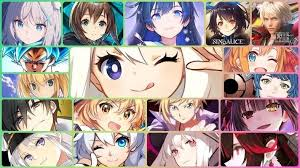
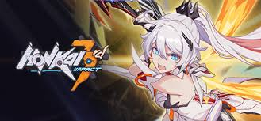
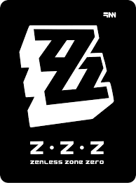
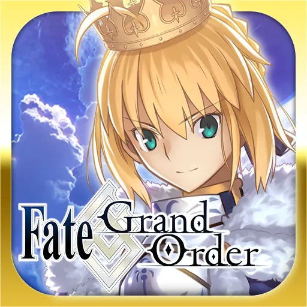
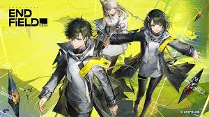
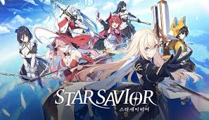

This website probably the proof that I'm a gacha player enough xD.


a popular free-to-play 3D cel-shaded anime action role-playing game (ARPG) developed and published by HoYoverse (formerly miHoYo). Released in 2016, it is a science fantasy, hack-and-slash game known for its fast-paced combat, deep narrative, and large cast of female characters known as Valkyries

a fast-paced, 3D anime-style action RPG developed by HoYoverse, set in a post-apocalyptic urban world. Players act as a "Proxy," navigating dangerous dimensions called Hollows and fighting monsters called Ethereals to save humanity's last city, New Eridu. Key gameplay features high-octane combat, character building, and TV-based navigation puzzles.

a story-heavy mobile RPG where players act as "Masters" in the organization Chaldea, traveling through time to fix "Singularities" that threaten to destroy human history. By summoning historical and mythical heroes (Servants), players fight to restore the timeline and prevent human extinction.

a free-to-play, 3D anime-styled action RPG with simulation elements, set on the dangerous world of Talos-II. Players act as the "Endministrator" leading a team to explore, reclaim, and build factory facilities to fight against environmental dangers and enemy threats. It blends real-time combat with base building and exploration.

a turn-based, sci-fi anime RPG where players act as a Captain guiding star-powered girls, known as "Saviors," through a journey to inherit the legacy of the legendary hero who saved Lavistar. Developed by StudioBSide, the game features 3D graphics, character-driven training, and cinematic combat.